library(tidyverse) # for dplyr, tibble, and ggplot2 packages
library(FSA) # for lencat(), fact2num(), alkPlot() and WR79 dataIntroduction
It is often important to examine the structure of an age-length key to ascertain its utility. The plots created with alkPlot() from FSA (see here) provide a quick method to create useful plots for this purpose. However, those plots are generally not of “publication-quality” and because some characteristics of the plots are hard-coded in the function, they are difficult (if not impossible) to customize. Modifying alkPlot() to be more flexible looked to require more work than benefit to be gained. Thus, here, I will demonstrate how to make similar plots using ggplot2 that will allow the user great flexibility for customizing the plots for publication (or exploration).
The following packages are loaded for use below.
I made a simple ggplot2 theme for use below. This can be modified as described, for example, here to further alter the overall appearance of the plots.
theme_ALK <- function(...) {
theme_bw(...) +
theme(panel.grid=element_blank(),
axis.title=element_text(size=14,face="bold"),
axis.text=element_text(size=12))
}
Construct Example Age-Length Key
This post uses the same WR79 from FSA (described here) to create the same age-length key used in the examples for alkPlot(). The age-length key from these data is created below as demonstrated in Introductory Fisheries Analsyses with R.
WR.age <- droplevels(subset(WR79, !is.na(age)))
WR.age$LCat <- lencat(WR.age$len,w=5)
raw <- xtabs(~LCat+age,data=WR.age)
WR.key <- prop.table(raw, margin=1)round(WR.key,3)#R| age
#R| LCat 4 5 6 7 8 9 10 11
#R| 35 1.000 0.000 0.000 0.000 0.000 0.000 0.000 0.000
#R| 40 1.000 0.000 0.000 0.000 0.000 0.000 0.000 0.000
#R| 45 1.000 0.000 0.000 0.000 0.000 0.000 0.000 0.000
#R| 50 1.000 0.000 0.000 0.000 0.000 0.000 0.000 0.000
#R| 55 1.000 0.000 0.000 0.000 0.000 0.000 0.000 0.000
#R| 60 0.600 0.400 0.000 0.000 0.000 0.000 0.000 0.000
#R| 65 0.000 1.000 0.000 0.000 0.000 0.000 0.000 0.000
#R| 70 0.000 1.000 0.000 0.000 0.000 0.000 0.000 0.000
#R| 75 0.000 0.889 0.111 0.000 0.000 0.000 0.000 0.000
#R| 80 0.000 0.250 0.750 0.000 0.000 0.000 0.000 0.000
#R| 85 0.000 0.000 0.909 0.091 0.000 0.000 0.000 0.000
#R| 90 0.000 0.000 0.263 0.632 0.105 0.000 0.000 0.000
#R| 95 0.000 0.000 0.059 0.706 0.176 0.000 0.059 0.000
#R| 100 0.000 0.000 0.000 0.556 0.167 0.278 0.000 0.000
#R| 105 0.000 0.000 0.000 0.286 0.429 0.143 0.143 0.000
#R| 110 0.000 0.000 0.000 0.200 0.200 0.200 0.200 0.200
#R| 115 0.000 0.000 0.000 0.000 0.000 0.000 1.000 0.000This age-length key is converted to a data.frame for plotting with ggplot2.
keydf <- as.data.frame(WR.key)
str(keydf)#R| 'data.frame': 136 obs. of 3 variables:
#R| $ LCat: Factor w/ 17 levels "35","40","45",..: 1 2 3 4 5 6 7 8 9 10 ...
#R| $ age : Factor w/ 8 levels "4","5","6","7",..: 1 1 1 1 1 1 1 1 1 1 ...
#R| $ Freq: num 1 1 1 1 1 0.6 0 0 0 0 ...levels(keydf$age)#R| [1] "4" "5" "6" "7" "8" "9" "10" "11"By default the LCat and age variables are factors in the new data.frame.1 Having age as a factor is useful, but the naturally increasing order of the levels (see above) causes the vertical ordering of ages in the plots below to be opposite of what is desired. Thus, the order of the age levels is reversed with fct_rev() from forcats and the name is changed to fage to make it clear that it is a factor. Some of the plots below require age as a numeric, rather than a factor, so the numeric ages are added to the data.frame in nage using fact2num() from FSA.2
1 One could use stringsAsFactors=FALSE in as.data.frame() but having those two variables as strings is not helpful.
2 fact2num() is used because it maintains the correct numerical value for each level of the factor.
keydf <- keydf |>
dplyr::mutate(age=forcats::fct_rev(age),
nage=FSA::fact2num(age)) |>
dplyr::rename(fage=age)
str(keydf)#R| 'data.frame': 136 obs. of 4 variables:
#R| $ LCat: Factor w/ 17 levels "35","40","45",..: 1 2 3 4 5 6 7 8 9 10 ...
#R| $ fage: Factor w/ 8 levels "11","10","9",..: 8 8 8 8 8 8 8 8 8 8 ...
#R| $ Freq: num 1 1 1 1 1 0.6 0 0 0 0 ...
#R| $ nage: num 4 4 4 4 4 4 4 4 4 4 ...levels(keydf$fage)#R| [1] "11" "10" "9" "8" "7" "6" "5" "4"There is no value below to having LCat as a factor so it is changed to a numeric using fact2num(). Finally, Freq is a proportion and not a “count” so it is changed to the more accurate prop below.
keydf <- keydf |>
dplyr::mutate(LCat=FSA::fact2num(LCat)) |>
dplyr::rename(prop=Freq)
str(keydf)#R| 'data.frame': 136 obs. of 4 variables:
#R| $ LCat: num 35 40 45 50 55 60 65 70 75 80 ...
#R| $ fage: Factor w/ 8 levels "11","10","9",..: 8 8 8 8 8 8 8 8 8 8 ...
#R| $ prop: num 1 1 1 1 1 0.6 0 0 0 0 ...
#R| $ nage: num 4 4 4 4 4 4 4 4 4 4 ...All of the previous modifications to the age-length key data.frame could be performed more efficiently in the following chain of commands.
keydf <- as.data.frame(WR.key) |>
dplyr::mutate(age=forcats::fct_rev(age),
nage=FSA::fact2num(age),
LCat=FSA::fact2num(LCat)) |>
dplyr::rename(fage=age,
prop=Freq)Finally, many of the length-age combinations in the age-length key are 0. Some of the plots made below are better made without the zeroes, whereas some are better with the zeroes. Thus, a second data.frame without zeroes is needed.
keydf_nozeroes <- keydf |>
dplyr::filter(prop>0)Stacked Barplot
The age-length key may be visualized as a stacked bar (or column) plot with proportion at age on the y-axis, length categories on the x-axis, and stacks colored according to the factored age. Note that the data.frame without zeroes and fage is used. Further note that younger ages start at the bottom of the bars because the order of the levels was reversed in fage.
ggplot(data=keydf_nozeroes,mapping=aes(y=prop,x=LCat,fill=fage)) +
geom_col() +
theme_ALK()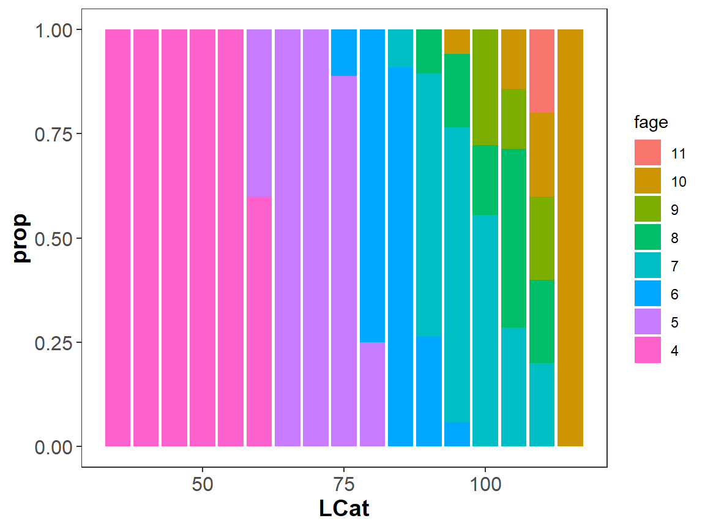
This plot can be improved by providing better labels for the axes, providing more length labels on the x-axis, and minimizing the extra vertical and horizontal spaced caused by expanding the x- and y-axes.
ggplot(data=keydf_nozeroes,mapping=aes(y=prop,x=LCat,fill=fage)) +
geom_col() +
scale_y_continuous(name="Proportion",expand=expansion(mult=c(0,0.01))) +
scale_x_continuous(name="Total Length (cm)",expand=expansion(mult=0.01),
breaks=seq(0,1000,5)) +
theme_ALK()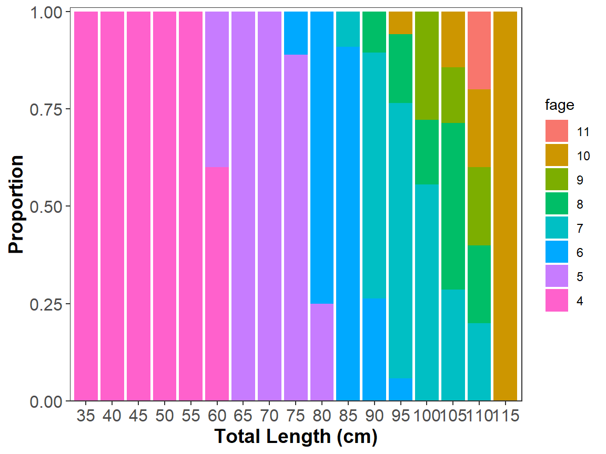
I also prefer to include age labels in the bars rather than having a legend. These labels may be added with geom_text().3 but the position needs to be controlled with position_stack() due to the stacking of the bars. vjust=0.5 is used in position_stack() so that the label will be placed at the halfway point (vertically) of the bar. With these labels, the legend is no longer needed and is removed within theme().
3 geom_label() provides a slightly different look.
ggplot(data=keydf_nozeroes,mapping=aes(y=prop,x=LCat,fill=fage)) +
geom_col() +
geom_text(mapping=aes(label=fage),
size=3,position=position_stack(vjust=0.5)) +
scale_y_continuous(name="Proportion",expand=expansion(mult=c(0,0.01))) +
scale_x_continuous(name="Total Length (cm)",expand=expansion(mult=0.01),
breaks=seq(0,1000,5)) +
theme_ALK() +
theme(legend.position="none")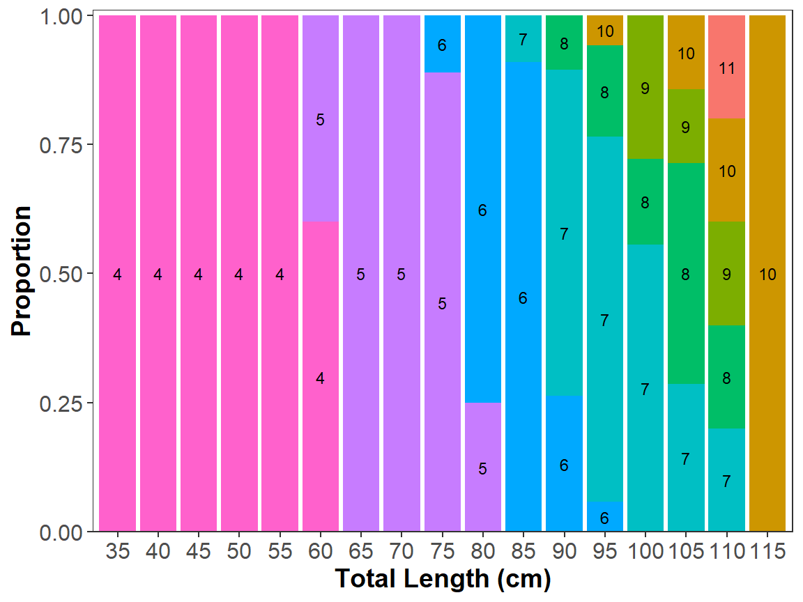
Bubble Plot
Another useful plot for visualizing the age-length key is to plot a point at each age-length position (for which fish existed) and scale the size of the point to the proportion found in the age-length key. The start of the plot is shown below, noting that the data.frame without zeroes and nage is used.
ggplot(data=keydf_nozeroes,mapping=aes(y=nage,x=LCat)) +
geom_point() +
scale_y_continuous(name="Age",expand=expansion(mult=0.05),breaks=4:11) +
scale_x_continuous(name="Total Length (cm)",expand=expansion(mult=0.05),
breaks=seq(0,1000,5)) +
theme_ALK() +
theme(legend.position="none")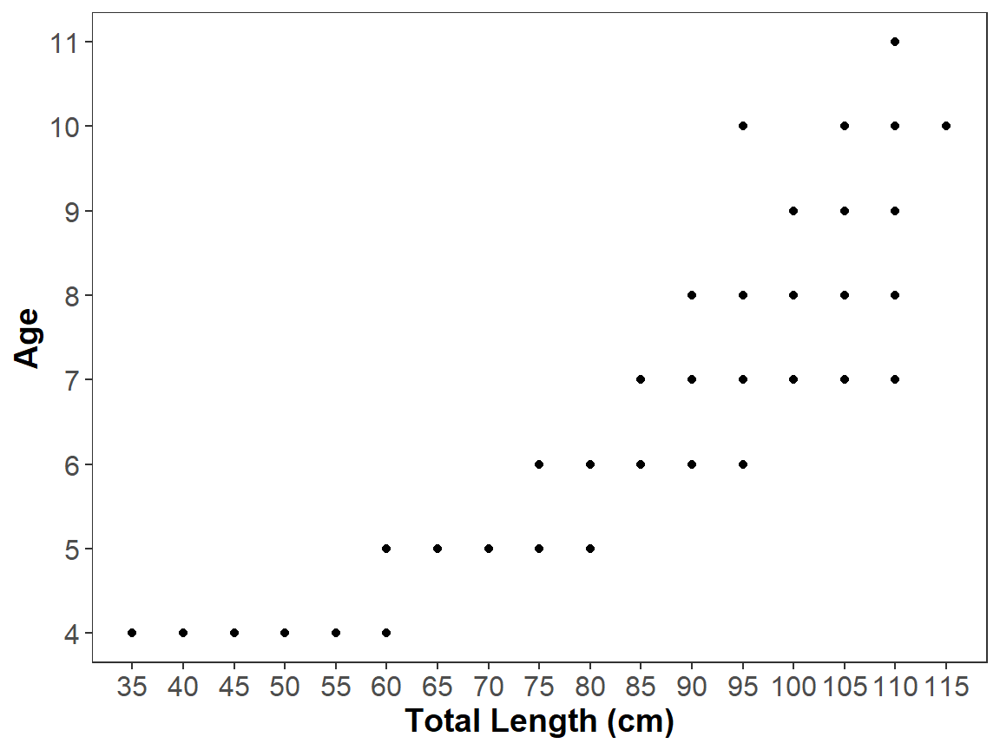
Two modifications are required to scale the size of the points. First, the size attribute within geom_point() should be mapped to “proportions” from the age-length key data.frame (i.e., prop). I also mapped color to the factored ages (i.e., fage), but that is superfluous as all points corresponding to each age on the y-axis will be the same color.
ggplot(data=keydf_nozeroes,mapping=aes(y=nage,x=LCat)) +
geom_point(mapping=aes(size=prop,color=fage)) +
scale_y_continuous(name="Age",expand=expansion(mult=0.05),breaks=4:11) +
scale_x_continuous(name="Total Length (cm)",expand=expansion(mult=0.05),
breaks=seq(0,1000,5)) +
theme_ALK() +
theme(legend.position="none")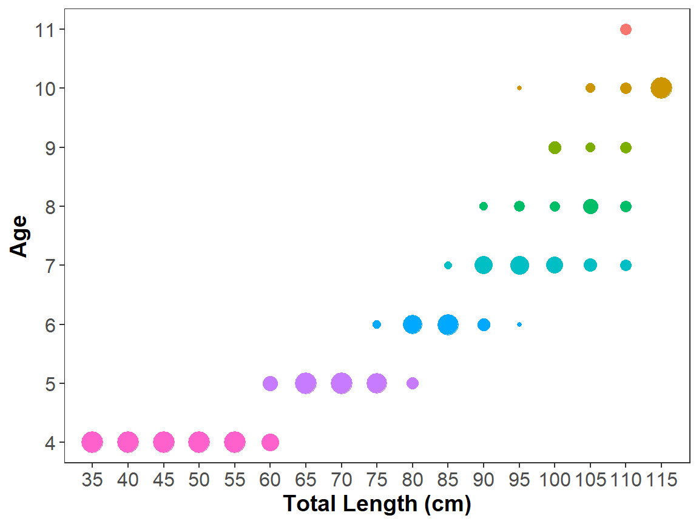
The second modification is to better control how the sizes of the points are determined with scale_size(). Below breaks= is used to create breaks in the range of values of the size= variable (i.e., prop) from 0 to 1 in steps of 0.1 (so, 10 breaks across the range of possible prop values). range= is then used to set a range of “size” values for the points. Here the range is set from 1 to 10 so that size=1 would be used for the smallest break in prop and size=10 would be used for the largest break in prop. In other words, the size of the points will range from 1 to 10 based on where the value of prop is in the breaks= sequence.4
4 You will likely need to try different values for range= to get “bubble” sizes that you prefer.
ggplot(data=keydf_nozeroes,mapping=aes(y=nage,x=LCat)) +
geom_point(mapping=aes(size=prop,color=fage)) +
scale_size(range=c(1,10),breaks=seq(0,1,0.1)) +
scale_y_continuous(name="Age",expand=expansion(mult=0.05),breaks=4:11) +
scale_x_continuous(name="Total Length (cm)",expand=expansion(mult=0.05),
breaks=seq(0,1000,5)) +
theme_ALK() +
theme(legend.position="none")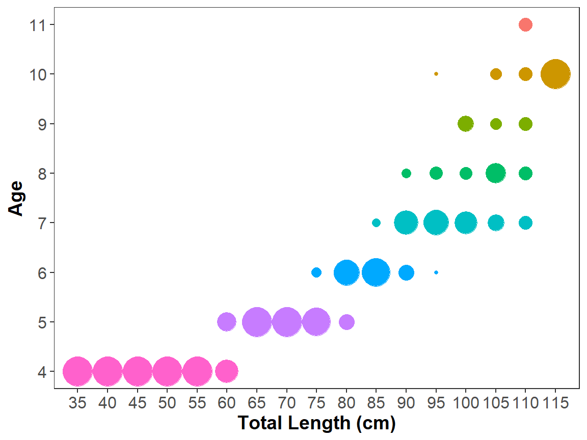
Line Plot
“Line plots” of the age-length key are easily constructed from the data.frame with zeroes using geom_line().5
5 size= is used here to make the lines a little heavier than the default.
ggplot(data=keydf,mapping=aes(y=prop,x=LCat,color=fage)) +
geom_line(size=1) +
scale_y_continuous(name="Proportion",expand=expansion(mult=c(0,0.01))) +
scale_x_continuous(name="Total Length (cm)",expand=expansion(mult=0.01),
breaks=seq(0,1000,5)) +
theme_ALK()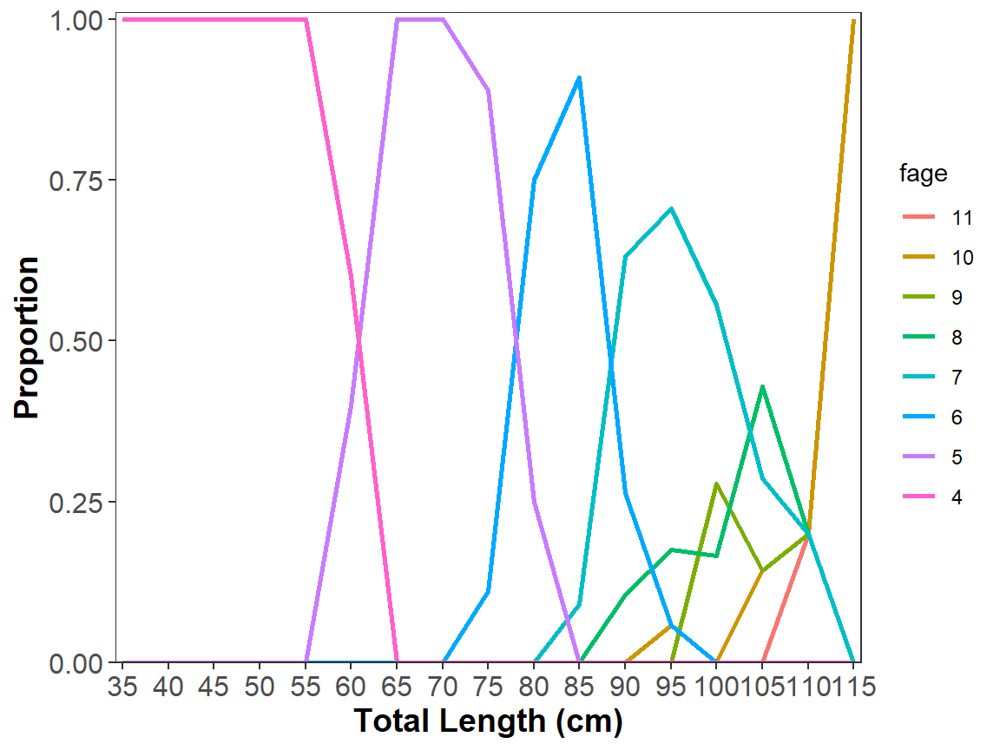
Again I prefer to have labels on the plot rather than in a legend if possible. In alkPlot() from FSA the line plot has age labels at the peak of each line. Adding these labels requires a separate data.frame that contains the portion of the age-length key data.frame that corresponds to the first instance of the maximum prop for each age. This data.frame is constructed below.
agelbldf <- keydf |>
group_by(fage) |>
slice(which.max(prop)) |>
as.data.frame() # to remove tibble and grouping
agelbldf#R| LCat fage prop nage
#R| 1 110 11 0.2000000 11
#R| 2 115 10 1.0000000 10
#R| 3 100 9 0.2777778 9
#R| 4 105 8 0.4285714 8
#R| 5 95 7 0.7058824 7
#R| 6 85 6 0.9090909 6
#R| 7 65 5 1.0000000 5
#R| 8 35 4 1.0000000 4The age labels are included on the plot by first moving data= and mapping= from ggplot() to geom_line().6 Then include the second data.frame in geom_label()7 with the the label= aesthetic to place the labels. fill= was used to fill the label box with the same color as the line, size= was used to increase the size of the text, and alpha= was used to make the color of the label box semi-transparent so that the lines behind them could still be seen. Furthermore, the expansion for the x-axis and the top of the y-axis were increased to make room for the labels. and the now unnecessary legend was removed.
6 This is needed when separate data.frames are used to make different aspects of the plot.
7 geom_text() provides a slightly different look.
ggplot() +
geom_line(data=keydf,mapping=aes(y=prop,x=LCat,color=fage),
size=1) +
geom_label(data=agelbldf,mapping=aes(y=prop,x=LCat,label=fage,fill=fage),
size=4,alpha=0.5) +
scale_y_continuous(name="Proportion",expand=expansion(mult=c(0,0.04))) +
scale_x_continuous(name="Total Length (cm)",expand=expansion(mult=0.04),
breaks=seq(0,1000,5)) +
theme_ALK() +
theme(legend.position="none")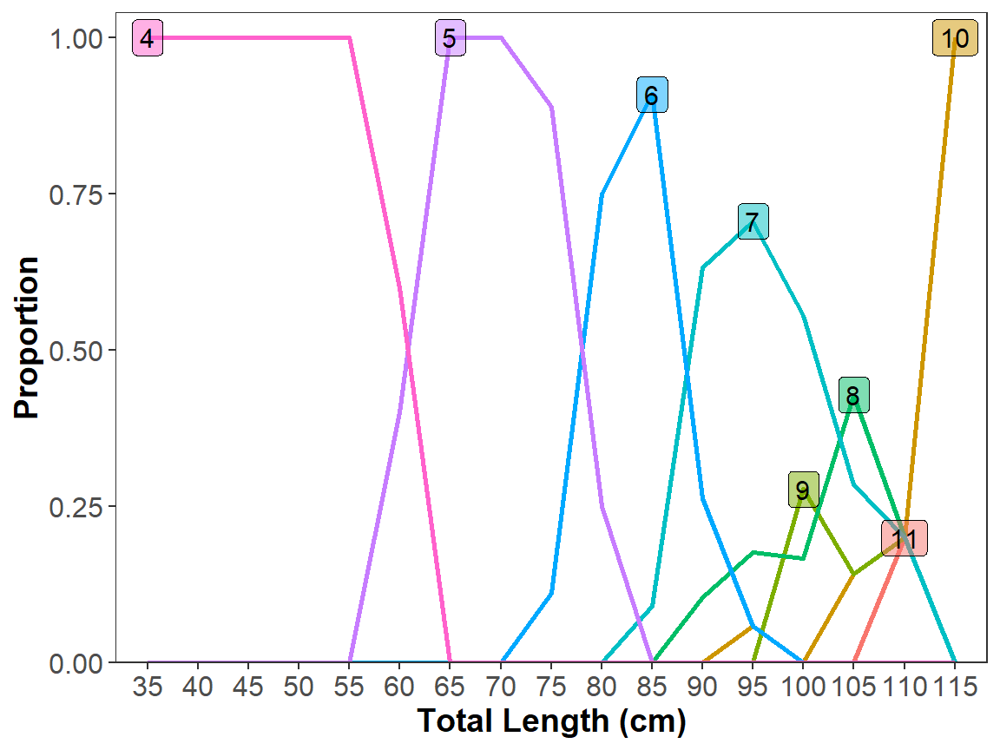
Area Plot
Area plots are similar to the barplot from above. However, I have found these plots to be the hardest to make look nice and to modify using base R plotting functions and, thus, I did not use them often. Here is a start for constructing an area plot with ggplot2 using geom_area().
ggplot(data=keydf,mapping=aes(y=prop,x=LCat,fill=fage)) +
geom_area() +
scale_y_continuous(name="Proportion",expand=expansion(mult=c(0,0.01))) +
scale_x_continuous(name="Total Length (cm)",expand=expansion(mult=0.01),
breaks=seq(0,1000,5)) +
theme_ALK()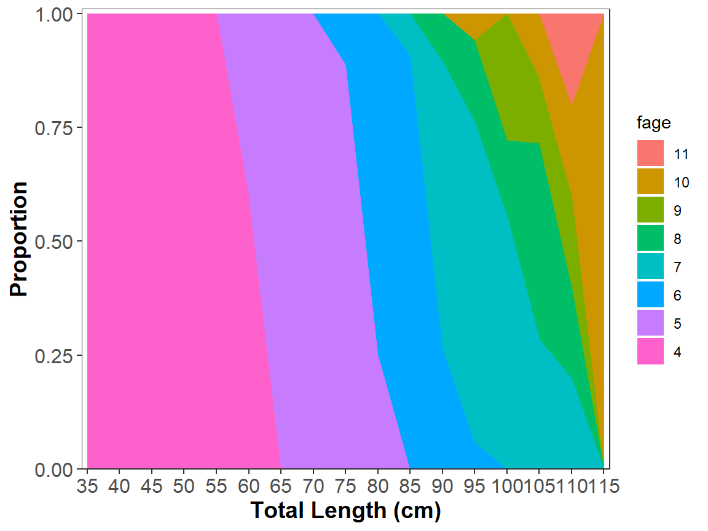
As before, I prefer to label the agess within the areas, rather than as a legend. I could not find an automated way to do this. Thus, the general method for labeling the lines in the line plot will be followed, except that the data.frame will have to be created by manually filling the LCat and prop values for where the labels should be placed. In practice this will likely take some trial-and-error as the positions are “eye-balled.” Below I use tribble() from tibble because I like how the data can be entered by rows rather than by columns.
agelbldf <- tibble::tribble(
~LCat,~prop,~lbl,
47, 0.50, "4",
70, 0.50, "5",
83, 0.50, "6",
95, 0.50, "7",
103, 0.62, "8",
101, 0.85, "9",
112, 0.70, "10",
110, 0.95, "11"
)This data.frame is then used with either geom_text() or geom_label() to add the labels to the appropriate areas. Note that vjust=0.5 and hjust=0.5 center the text label on the given coordinates.
ggplot() +
geom_area(data=keydf,mapping=aes(y=prop,x=LCat,fill=fage)) +
geom_text(data=agelbldf,mapping=aes(y=prop,x=LCat,label=lbl),
size=4,vjust=0.5,hjust=0.5) +
scale_y_continuous(name="Proportion",expand=expansion(mult=c(0,0.01))) +
scale_x_continuous(name="Total Length (cm)",expand=expansion(mult=0.01),
breaks=seq(0,1000,5)) +
theme_ALK() +
theme(legend.position="none")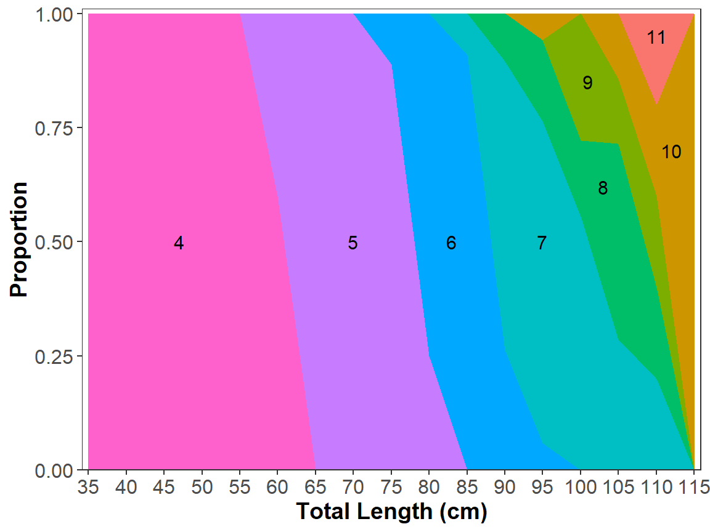
Why These Modifications?
I prefer these plots to those produced by alkPlot() (even though I wrote the code for all of those plots) because the full arsenal of ggplot2 commands can be used to modify the plots and because these plots more readily handle some issues with age-length keys.
It is beyond the scope of this post to show all the ways these plots can be modified with ggplot2 code. A simple example is to replace the rather garish colors used above. For example, the fill color on the barplot can be changed to a scale of blues with scale_fill_brewer() as shown below. Many other color schemes can be used (see this as one (of many) demonstration of choosing colors.)
ggplot(data=keydf_nozeroes,mapping=aes(y=prop,x=LCat,fill=fage)) +
geom_col() +
geom_text(mapping=aes(label=fage),
size=3,position=position_stack(vjust=0.5)) +
scale_y_continuous(name="Proportion",expand=expansion(mult=c(0,0.01))) +
scale_x_continuous(name="Total Length (cm)",expand=expansion(mult=0.01),
breaks=seq(0,1000,5)) +
scale_fill_brewer(palette="Blues") +
theme_ALK() +
theme(legend.position="none")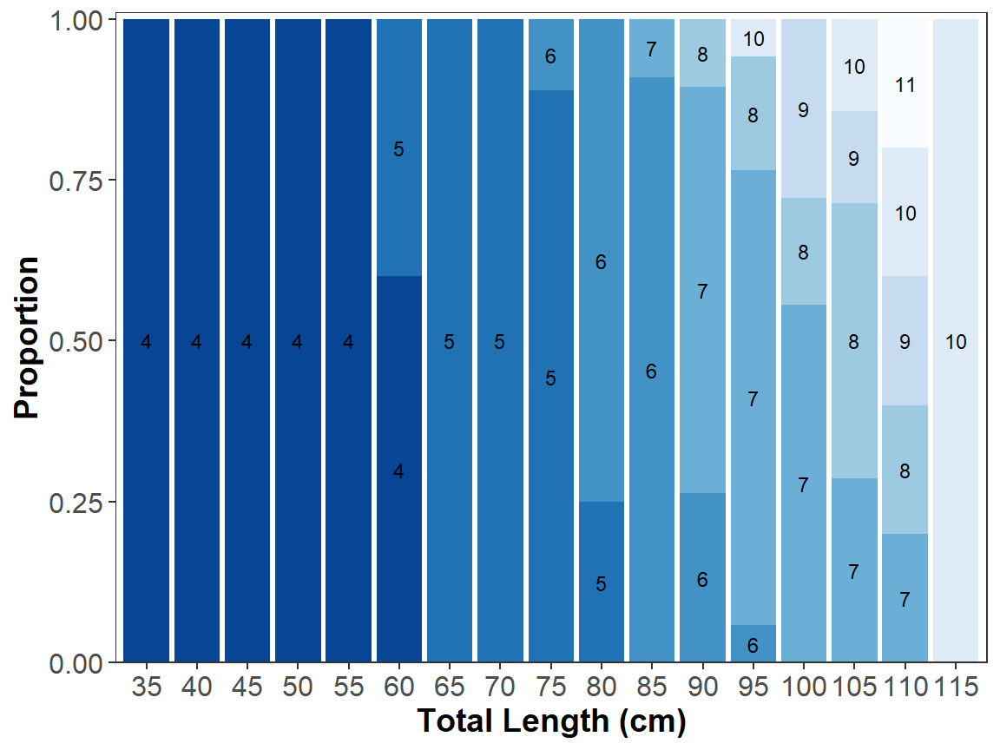
You may want to avoid color altogether and use a grey scale when preparing for print publications. One could use scale_color_brewer(palette="Greys") but this tends to leave the last age as white, which may not be effective. Instead use scale_color_grey() and use start= and end= to control the levels of grey (note that 0 is black and 1 is white).
ggplot(data=keydf_nozeroes,mapping=aes(y=nage,x=LCat)) +
geom_point(mapping=aes(size=prop,color=fage)) +
scale_size(range=c(1,10),breaks=seq(0,1,0.1)) +
scale_y_continuous(name="Age",expand=expansion(mult=0.05),breaks=4:11) +
scale_x_continuous(name="Total Length (cm)",expand=expansion(mult=0.05),
breaks=seq(0,1000,5)) +
scale_color_grey(start=0.8,end=0.2) +
theme_ALK() +
theme(legend.position="none")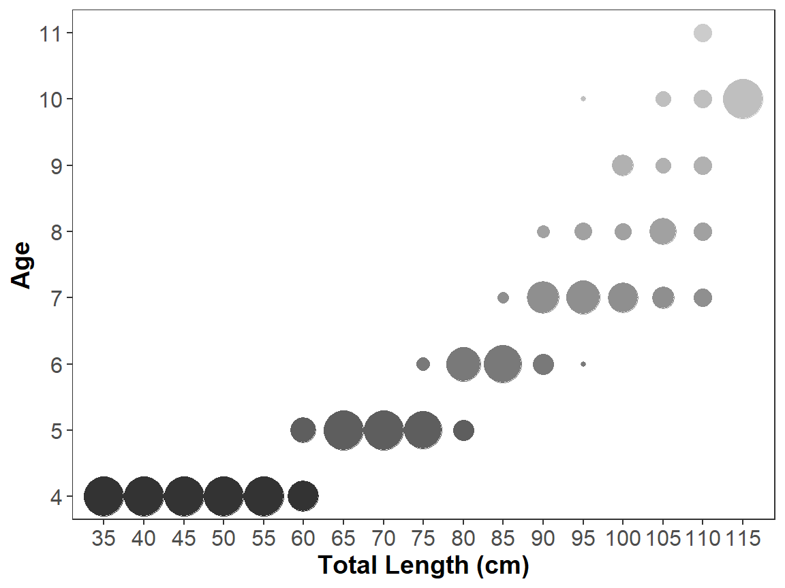
This post originally started because a user noted that alkPlot() plots were not appropriate when some of the length classes were missing from the age-length key. For example, suppose that no fish existed from 55 to 70 cm in the original data.frame.
WR.age <- droplevels(subset(WR79, !is.na(age)))
WR.age <- subset(WR.age,len<55 | len>70) # remove 55-70 cm fish
WR.age$LCat <- lencat(WR.age$len,w=5)
raw <- xtabs(~LCat+age,data=WR.age)
WR.key <- prop.table(raw, margin=1)See how the alkPlot() plot does not clearly show the gap in the data for those lengths (i.e., the 50- and 70-cm bars are right next to each other).
alkPlot(WR.key)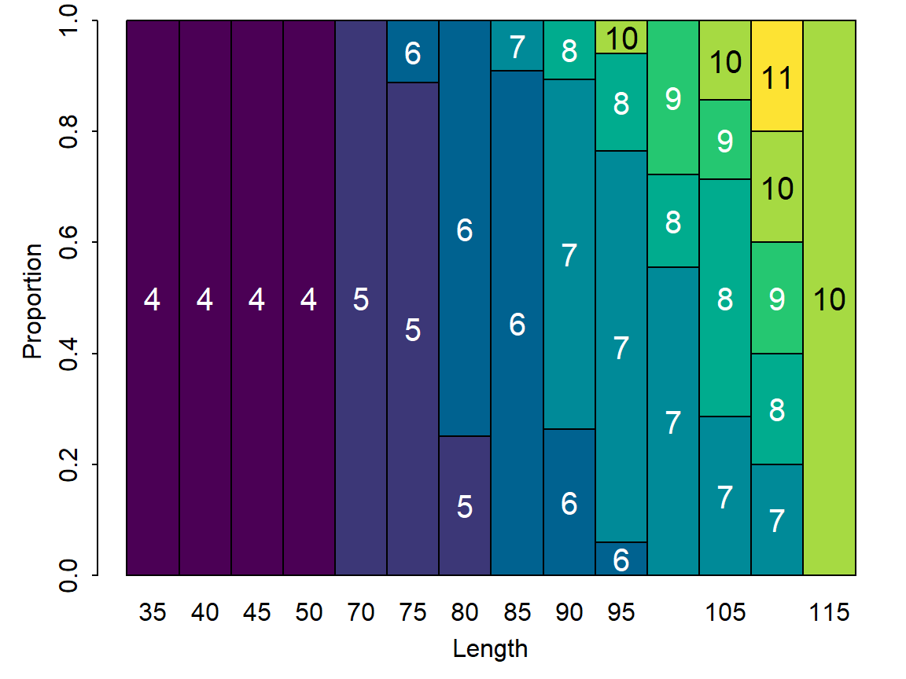
However, the similar ggplot2 plot, though clearly requiring more code from the user, properly shows the missing length categories.
WR.keydf <- as.data.frame(WR.key) |>
dplyr::mutate(age=forcats::fct_rev(age),
nage=FSA::fact2num(age),
LCat=FSA::fact2num(LCat)) |>
dplyr::rename(fage=age,
prop=Freq) |>
dplyr::filter(prop>0)
ggplot(data=WR.keydf,mapping=aes(y=prop,x=LCat,fill=fage)) +
geom_col() +
geom_text(mapping=aes(label=fage),
size=3,position=position_stack(vjust=0.5)) +
scale_y_continuous(name="Proportion",expand=expansion(mult=c(0,0.01))) +
scale_x_continuous(name="Total Length (cm)",expand=expansion(mult=0.01),
breaks=seq(0,1000,5)) +
theme_ALK() +
theme(legend.position="none")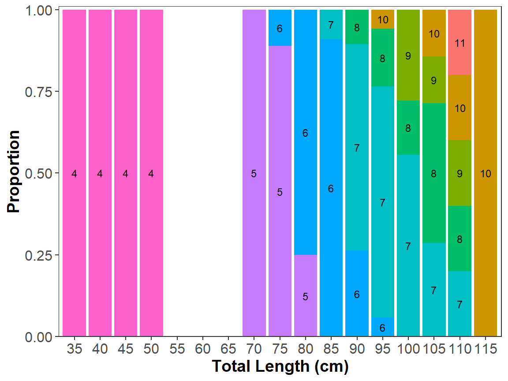
Reuse
Citation
BibTeX citation:
@online{h._ogle2025,
author = {H. Ogle, Derek},
title = {Age-Length {Key} {Plots}},
date = {2025-01-05},
url = {https://fishr-core-team.github.io/fishR/blog/posts/2025-1-5_ALKPlots_GGplot/},
langid = {en}
}
For attribution, please cite this work as:
H. Ogle, D. 2025, January 5. Age-Length Key Plots. https://fishr-core-team.github.io/fishR/blog/posts/2025-1-5_ALKPlots_GGplot/.